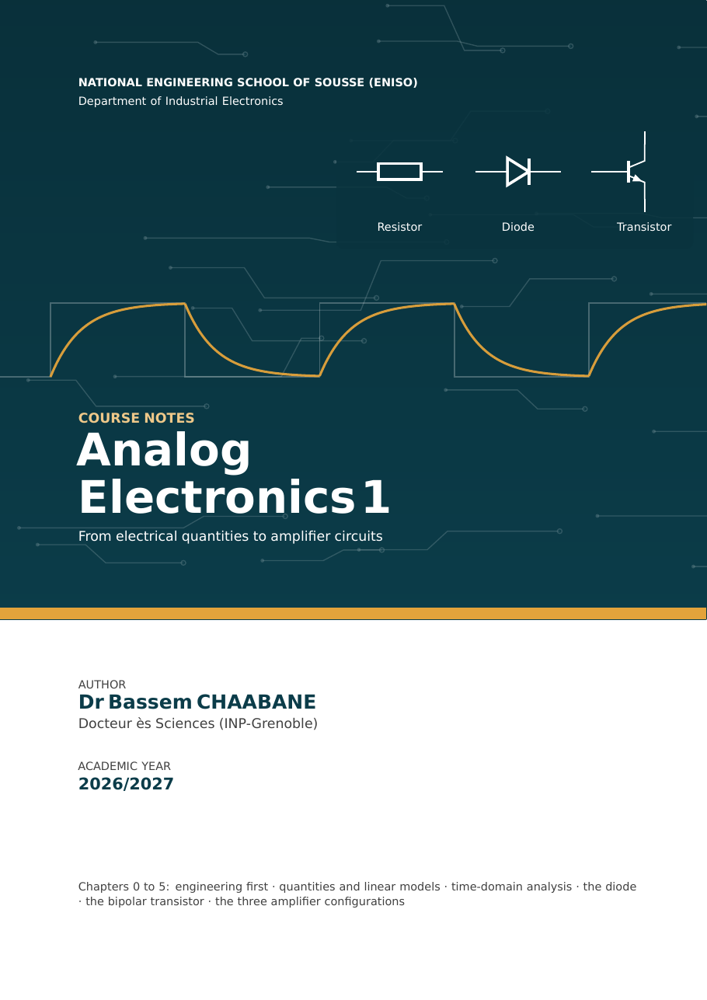

Analog Electronics 1
From electrical quantities to amplifier circuits
Dr Bassem CHAABANE · Department of Industrial Electronics
National School of Engineers of Sousse (ENISO)
This course follows a single line: set out the circuit laws, meet nonlinearity, build linear models, then apply them to the diode and the bipolar transistor up to the three amplifier configurations. This site gives the full text of the course notes: the same sections, figures, equations and numbering, plus interactives computed from the course equations.
The circuit tools
Laws, linear models and time response
- Chapter 0Engineering firstThe profession, the gap between courses and practice, and the approach this course takes
- Chapter 1From electrical quantities to linear modelsMeasuring, stating the laws, meeting nonlinearity, and building the linear toolkit Linearising around Q
- Chapter 2Time-domain analysis of linear circuitsFrom the square wave to the RC circuit, from Fourier to Laplace, then from the oscillator to feedback RC: square wave and Bode
The components and their circuits
The diode, the bipolar transistor and the three configurations
- Chapter 3The diode and its applicationsOne component, several models: choosing according to the question asked The diode models
- Chapter 4The bipolar transistor and its biasingFrom the characteristics to the operating point, then to the small-signal model The transistor point Q
- Chapter 5The three basic amplifier configurationsOf the bipolar transistor. Common emitter, common collector, common base: a two-port for each
Annexes
Outside the 21 hours of the module, to read at your own pace
- Annex AOperational amplifiers and dynamic reasoningFollowing how a circuit evolves before writing its rules
- Annex BEnergy and power in electronic circuitsWhere the energy goes when a circuit switches
- Annex CPrecision rectification: from the switching diode to feedbackFollowing a real circuit rather than starting from the rules of the ideal amplifier
Interactives
The models of the course in motion, computed with its equations and reference values.
Downloads
The printable versions, with the same content as this site.
- Course notesChapters 0 to 5, annexes A to C and bibliography · PDF · 147 pages · 1.3 MB
- Tutorials: problemsOne set per chapter and the course application exercises · PDF · 78 pages · 0.7 MB
- Tutorials: solutionsDetailed solutions and answers · PDF · 112 pages · 0.6 MB
- Application note SBOA068“Precision Absolute Value Circuits”, original unmodified document, studied in annex C · PDF · 0.1 MB